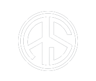

Site Em Manutenção
Por Favor, Volte Mais Tarde, a Manutenção Está Prevista Para Durar 24 Horas, Horário De Brasília. Essa Manutenção Foi Iniciada Às 23:50 Horas Do Dia 06/07/23. Se Já Se Passaram 24 Horas e Você Ainda Vê Essa Tela, Pode Ser Que o Site Ainda Não Foi Colocado Online, Se Esse For o Caso, Espere Mais Um Pouco Ou Entre Em Contato Com a Nossa Equipe Nos Contatos Abaixo.